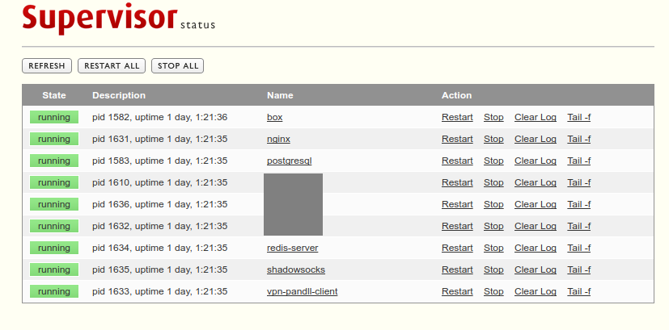

Superviosr 介绍
Supervisor是一款用采用Client/Server架构、开源(github地址)的进程监控管理工具。
Supervisor稳定、简单、高效、可扩展、兼容性好，可以在大部分类Unix系统(Debian、Solaris、Mac OS、FreeBSD等)上使用(不支持Windows，可用NSSN替代)。
Supervisor可以很方便的管理批量进程，不仅支持启动、重启、关闭、重载，还支持监控进程，进程意外僵死后可自动拉起。
Supervisor虽然是用Python开发，但是可以用来管理任意进程，而不仅仅是Python进程。
Supervisor目前最新版本3.3.4，暂不支持Python 3，不过即将推出的4.0版本将会支持Python3.4+。
Supervisor由以下4部分组成:
supervisord
supervisord是supervisor的后台服务。它负责启动supervisor管理的子进程、响应来自client的请求、重启闪退或异常退出的子进程、把子进程的stderr或stdout记录到日志文件中、生成和处理Event等。
supervisorctl
supervisorctl相当于supervisor的客户端。它有一个类shell的命令行界面，可以通过命令查看、启动、停止、重启子进程，supervisorctl不仅可以通过UNIX socket连接本机的supervisord管理进程，还可以通过TCP socket连接远程的supervisord管理进程。supervisorctl和supervisord之间的通信，是通过xml_rpc完成的，相应的配置在[supervisorctl]块里面。
Web Server
Web Server主要可以在界面上管理进程，Web Server其实是通过XML_RPC来实现的，可以向supervisor请求数据，也可以控制supervisor及子进程。配置在[inet_http_server]块里面。
XML-RPC Interface
supervisorctl和Web Server通过
XML-RPC接口调用supervisord，实现进程的管理。当然你也可以在你自己的服务里调用这些XML-RPC接口，来管理子进程。
Supervisor 安装
通过源码安装
$ git clone https://github.com/Supervisor/supervisor.git
$ python setup.py install
通过pip安装
$ pip install supervisor
通过apt-get安装
在Ubuntu上，可以直接运行apt-get install supervisor安装
通过easy_install安装
$ easy_install supervisor
easy_install 是一个基于setuptools的工具，帮助我们自动下载、编译、安装和管理python packages。
pip是easy_install的改进版，平常用pip就可以了，但还有老版本的Python只有easy_install。
Supervisor 配置
Supervisor的配置文件采用的Windows INI格式，推荐命名为supervisord.conf，supervisord和supervisorctl都会用到这个配置文件。Supervisor启动时可以通过-c参数指定配置文件，如果没有指定，supervisor则会在以下路径依次寻找supervisord.conf，直到读取到supervisord.conf。
1 | CWD/supervisord.conf # $CWD表示运行supervisord程序的目录 |
安装完毕后，可以通过echo_supervisord_conf生成一份默认初始配置文件。$ echo_supervisord_conf > your_path/supervisord.conf
supervisord.conf主要由以下9个部分组成。其中常用的为前面6个部分，后面3个很少用到。
[unix|inet]_http_server
supervisorctl通过unix socket或tcp socket与supervisord通信，Web Server通过tcp与supervisord通信。unix_http_server和inet_http_server两者必须配置一个，否则无法管理supervisord。
1 | [unix_http_server] |
supervisord
1 | [supervisord] |
supervisord的配置也可以不写入配置文件，可在启动supervisord时当参数传入，如下所示。
1 | supervisord -h |
supervisorctl
当你使用unix socket与supervisord通信时，serverurl配置unix://path/supervisor.sock。当你使用tcp socket与supervisord通信时，serverurl配置http://ip:port。
如果[unix|inet]_http_server中有设置username和password，此处不配置的话，则通过supervisorctl管理时需要显式传入username 和 password。如果你不希望别人查看管理你的program，这种方式就有用了。
1 | [supervisorctl] |
supervisorctl的配置也可以不写入配置文件，可在启动supervisorctl时当参数传入，如下所示。
1 | supervisorctl -h |
program
应用程序配置信息，x是应用程序的唯一标识，不能重复。后续对该程序的所有操作(start, restart等)都通过该名字来实现。
1 | ;[program:x] |
include
1 | [include] |
group
1 | [group:x] |
rpcinerface
这个选项是给XML_RPC用的，当然你如果想使用supervisord或者web server 这个选项必须要开启的
1 | [rpcinterface:supervisor] |
fcgi-program
1 | ;[fcgi-program:x] |
eventlistenner
1 | ;[eventlistenner:x] |
Supervisor 命令
启动supervisor服务
$ install_path/supervisord -c supervisord.conf如果是
apt-get安装，可通过service supervisor start启动停止supervisor服务
$ supervisorctl [-c supervisord.conf] shutdown如果是
apt-get安装，可通过service supervisor stop停止查看supervisor管理的program列表及状态
$ supervisorctl [-c supervisord.conf] status管理单个或多个进程
$ supervisorctl [-c supervisord.conf] [start|status|stop|restart] program_name_1 [program_name_n...]管理进程组
$ supervisorctl [-c supervisord.conf] [start|status|stop|restart] groupworker:group_name启动新配置的program、重启配置有改动的program
$ supervisorctl [-c supervisord.conf] update停止原所有进程，并按新的配置启动program
$ supervisorctl [-c supervisord.conf] reload停止所有program
$ supervisorctl [-c supervisord.conf] stop all进入supervisorctl交互式环境
$supervisorctl [-c supervisord.conf]
说明
Supervisor 只能管理在前台运行的程序，所以如果应用程序有后台运行的选项，需要关闭。
如果program还有子进程，为确保所有program子进程都能正确停止，[program:x]下的
stopasgroup和killasgroup都必须设置为true，否则program子进程就可能变成僵尸进程。按照官方文档的定义，一个 [program:x] 实际上是表示一组相同特征或同类的进程组，也就是说一个 [program:x] 可以启动多个进程。这组进程的成员是通过
numprocs和process_name这两个参数来确定的。Supervisor 同时还提供了另外一种进程组的管理方式，通过这种方式，可以使用 supervisorctl 命令来管理一组进程。跟 [program:x] 的进程组不同的是，这里的进程是一个个的 [program:x] 。
Supervisor的Web Server界面长这样
